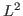

The related physical equations of linear elasticity are the equilibrium equation and the constitutive equation, which expresses a relation between the stress and strain tensors. This is a first-order partial differential system such that a least squares method based on a stress-displacement formulation can be used whose corresponding finite element approximation does not preserve the symmetry of the stress1.
In this talk, a new method is investigated by introducing the vorticity and applying the

norm least squares principle to the stress-displacement-vorticity system. The question of ellipticity due to the fact that all three variables are present in one equation is discussed. Further, the supercloseness of the least squares approximation to the standard mixed finite element approximations arising from the Hellinger-Reissner principle with reduced symmetry2, is studied. This implies that the favourable conservation properties of the dual-based mixed methods and the inherent error control of the least squares method are combined.Additionally, a closer look will be taken at the error that appears using this formulation on domains with curved boundaries approximated by a triangulation 3. In the higher-order case, parametric Raviart-Thomas finite elements are employed to this end.
Finally, it is shown that an optimal order of convergence is achieved and illustrated numerically on a test example.